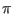
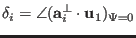

Next: Including Quadrupolar and Higher Up: Resonant Inelastic X-ray Scattering(RIXS) Previous: Resonant Inelastic X-ray Scattering(RIXS) Contents Index
[Coordinate system, see[28]:] Euclidean (orthonormal) system. The scattering plane, defined by the direction of the incident and final wave vectors
and
, contains
lying perpendicular and in the sense of
parallel to the scattering vector
. [Polarisation of the Photon beam:]
and  refer to the polarisation of the beam parallel and perpendicular to , respectively. [Angles for azimuth
:]
, , where
and
is the projection of
onto the plane perpendicular to
. In the chosen experimental geometry azimuth